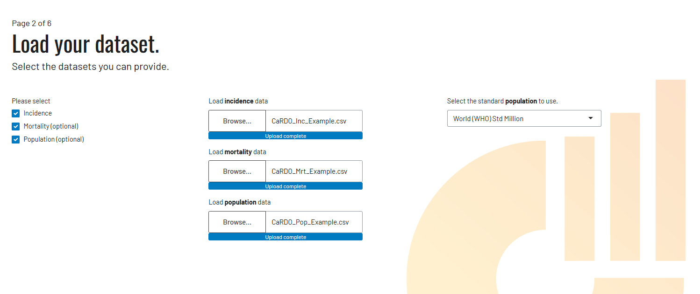
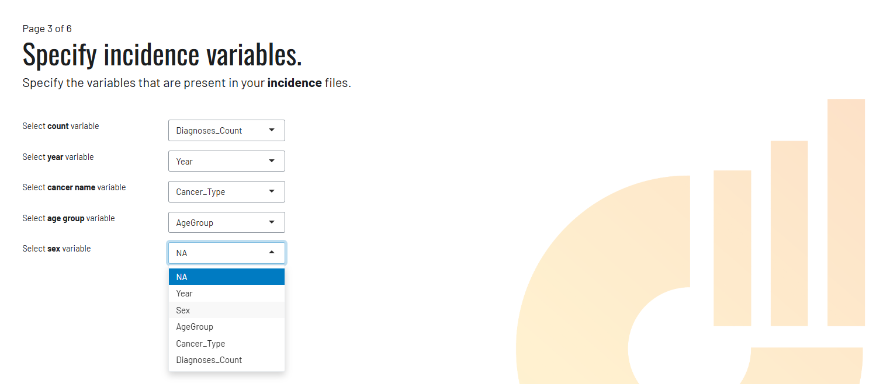
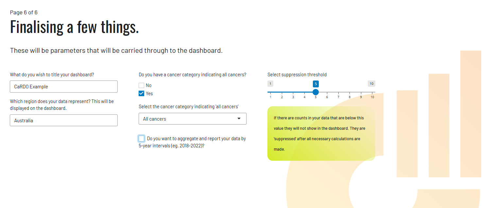
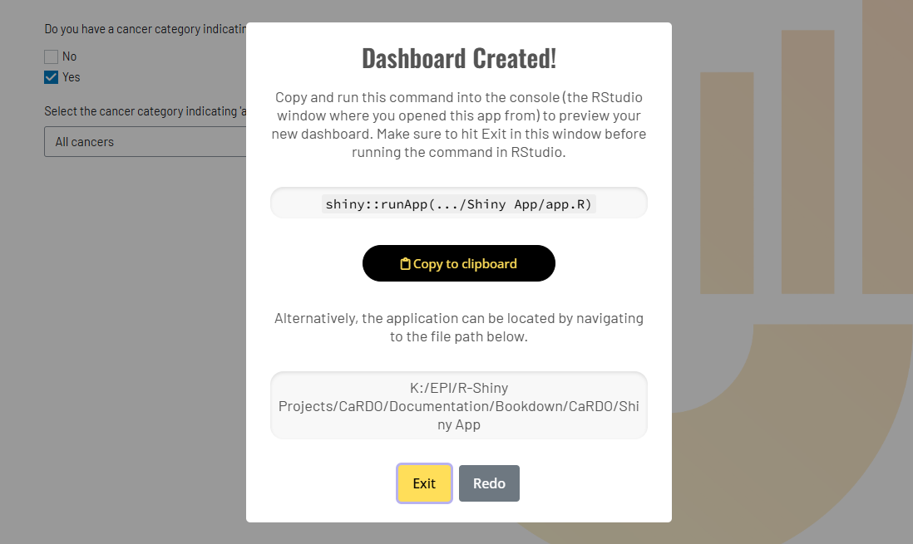

Chapter 4 CaRDO Example
4.1 Example Datasets
Below are three example datasets that we will use to build an example CaRDO dashboard. These datasets are designed to illustrate how cancer incidence, mortality, and population data should be structured and how they will be visualised in CaRDO. Download the datasets and store them on your computer - in a moment we’ll load these datasets into CaRDO.
Cancer Incidence Dataset: An example dataset containing cancer diagnoses by cancer type, year, sex, and 5-year age group.
Cancer Mortality Dataset: An example dataset containing cancer deaths by cancer type, year, sex, and 5-year age group.
Population Dataset: An example dataset containing population estimates by year, sex, and 5-year age group, which can be used for calculating age-standardised cancer rates.
- These datasets are fictional and do not reflect real cancer data
4.2 Launch CaRDO
Step 1. Open RStudio.
Step 2. Set your working directory (optional).
This is where you want to save your CaRDO dashboard application. You can set your working directory by typing the following command into the RStudio console – specifying your directory between the quotations. For data security reasons, we recommend setting your working directory to a local drive that is not regularly synced to a cloud service. This precaution helps prevent any (extremely unlikely) data exposure.
Alternatively, you can set the working directory using RStudio’s menu system
- Session –> Set Working Directory –> Choose Directory…

Step 3. Launch CaRDO.
To laucnh CaRDO, copy and paste the following code into your RStudio console and press Enter/Return. This step will open the CaRDO user interface in a web browser.
Step 4. Welcome to CaRDO.
CaRDO begins with a disclaimer. The information is a summary of Data Requirements and Data Privacy details. We recommend reading these sections of the handbook in detail before loading your own data into CaRDO. However, for now, click Okay, I understand then Next.
Step 5. Load datasets.
Select Incidence, Mortality and Population and load in the three example datasets previously downloaded. All datasets you wish to load into CaRDO must be done at this step - all at once. Select an appropriate standard population for rate calculations then click Next
- If you’re at this step with your own data, select only those datasets that you have available.

Step 6. Specify your variables
Rather than force users to label their variables a specific way, CaRDO asks users to match their supplied variables with the key CaRDO indicator variables. Match each CaRDO variable listed on the left with the variables within each dataset - this step must be performed separately for each dataset loaded into CaRDO. Take care at this step to ensure that the correct variables are specified.
- Your variable names will appear in the drop-down fields

Step 7. Finalise your dashboard.
Give your dashboard a title and specify the specific area that your cancer data covers. For example, is your data from a specific country, state or province, city or health region?
On this page, you are also asked to specify whether the loaded cancer incidence and mortality datasets contain an ‘All cancers’ category. This refers to a row/rows that sum up the total number of cancer diagnoses or deaths for all cancers combined - often ladeled as ‘All cancers’. This is different from only having individual cancer types like lung or breast cancer in the dataset. It’s important to know because it affects how CaRDO will calculate totals and display summary statistics. We strongly recommend including an ‘All cancers’ category in your cancer datasets for reasons discussed further in the Data Requirements section. The example cancer datasets contain an ‘All cancers’ category so we will leave ‘Yes’ selected.
Finally, the suppression threshold allows users to suppress any values in the dataset below the specified value (if this hasn’t already been done during data preparation). This feature is designed as a safety mechanism — a final layer of protection in case suppression wasn’t handled beforehand loading your data. For registries with minimal data, you’re also given the option to aggregate your data into fixed 5-year intervals (e.g., 2018–2022) to support meaningful reporting while maintaining confidentiality. Leave suppression at 5, skip aggregation for now, and click Create Dashboard.

Step 8. Open your dashboard
CaRDO will provide you with code to open your dashboard application (.app) file. Follows these exact steps in this order.
Click Copy to clipboard
Click Exit CaRDO.
Paste the code into your R console and press Enter/Return.
- Be sure to exit the CaRDO interface before running the code, as RStudio won’t execute the code while the CaRDO interface is still open!

Alternatively, CaRDO will provide you with a local file path (your RStudio working directory) to your dashboard application. Follow the path and open the ‘app’ file - this is your CaRDO application. Run the code by clicking ‘Run’ in the top right of the RStudio console.

You’ve done it! Start exploring the dashboard by cycling through the available filters. In the next section, we’ll guide you through the specific Data Requirements for building a CaRDO dashboard using your own data.
Finished building your CaRDO dashboard with your own data? Learn how to publish it here.